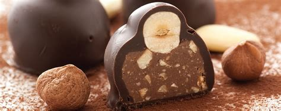
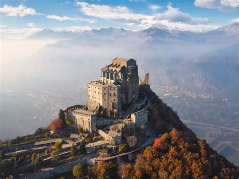
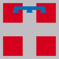

Piedmont
Overview
Piedmont is a region in northwestern Italy, bordered by France and Switzerland. Its name means “at the foot of the mountains,” referring to its location near the Alps. Piedmont is known for its elegant cities, rich culinary traditions, and scenic landscapes of vineyards, hills, and snowy peaks. Turin (Torino), the regional capital, was Italy’s first capital and remains a cultural and industrial center.
Quick Facts
- Capital: Turin
- Regional Language: Piedmontese
- Population: ~4.3 million
- Main Industries: Automotive, agriculture, tourism, chocolate
- Famous For: Barolo wine, Alps, Fiat, truffles
- Fun Fact: The Slow Food movement began in Piedmont!
Cuisine
Bagna Cauda

Tajarin

Gianduja

White Truffle of Alba

Famous Landmarks
Mole Antonelliana

Royal Palace of Venaria

Langhe Hills

Sacra di San Michele

Alps

Best Time to Visit
The best times to visit Piedmont are spring (April–June) and autumn (September–October). Autumn is especially popular for wine harvests, truffle fairs, and colorful landscapes. Winter is great for snow sports in the Alps.
Regional Symbols
- Flag:
- Emblem: 
- Animal: Alpine Ibex